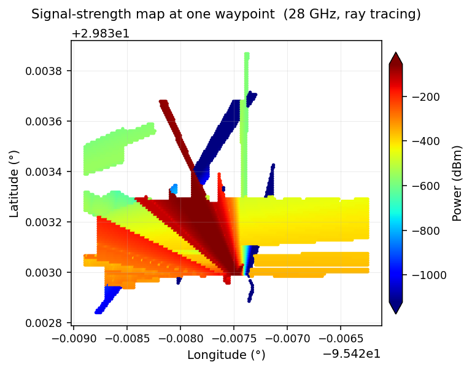
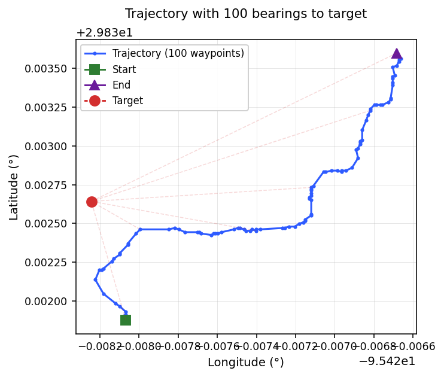
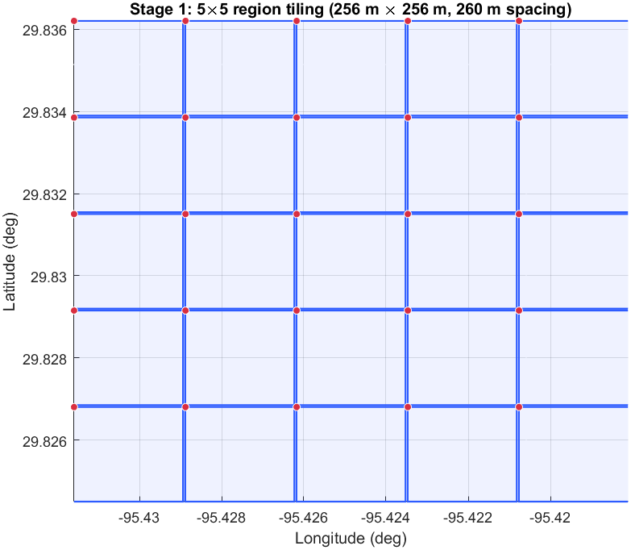
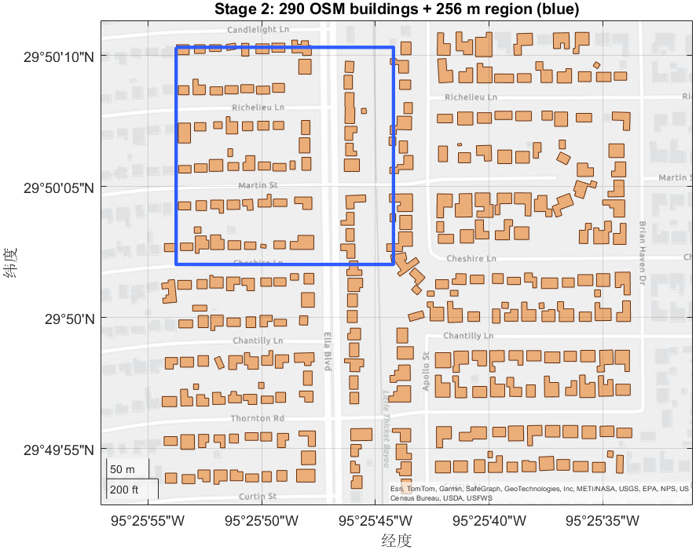
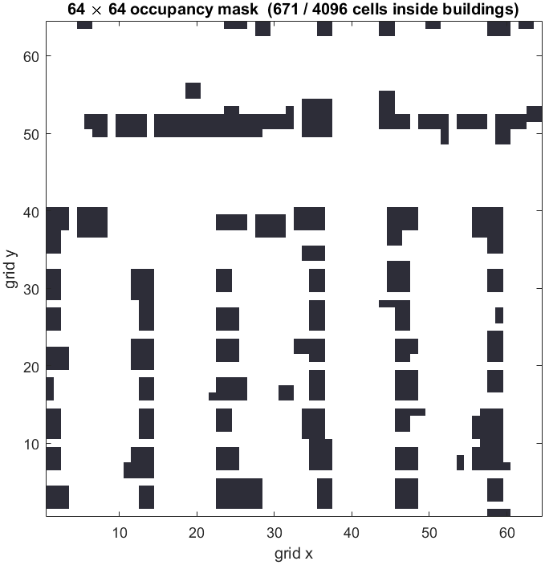
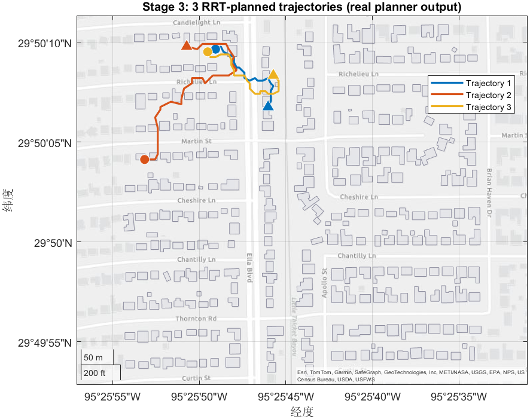
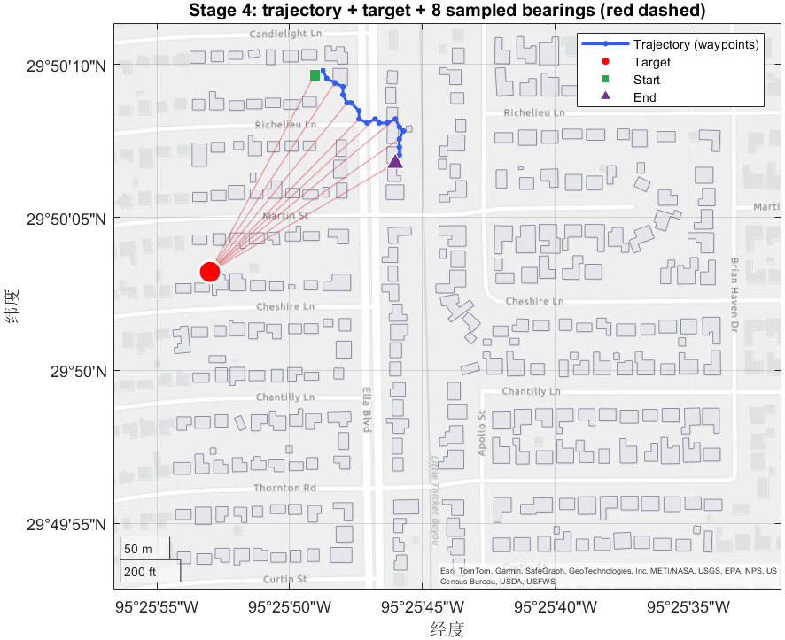
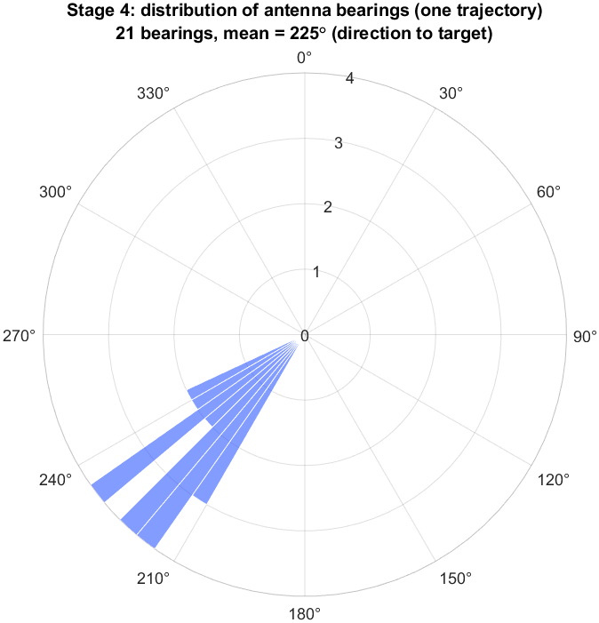
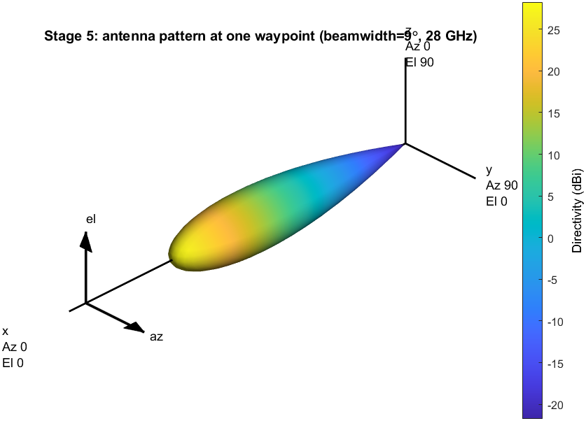
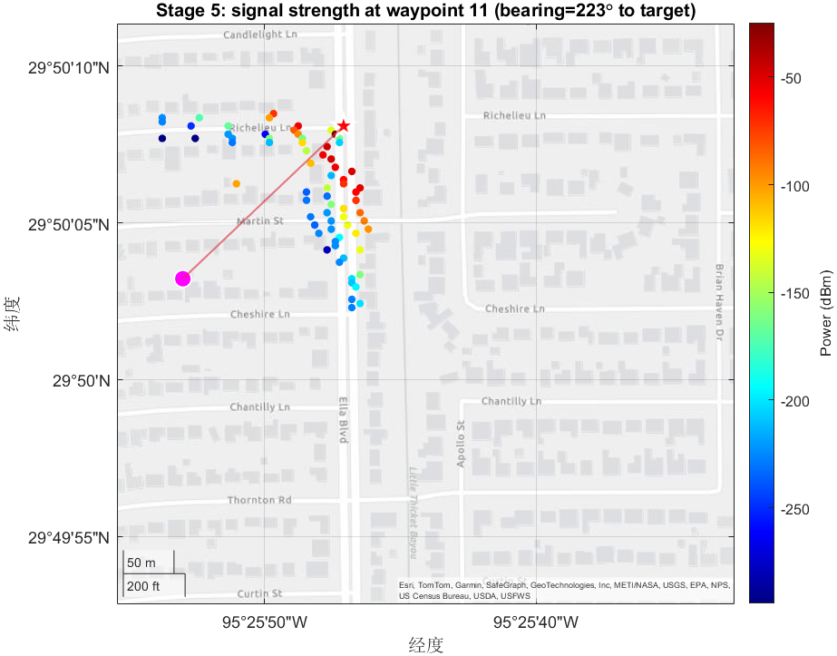

fix_angle_trajectory
Generate obstacle-aware trajectories where each waypoint's antenna points at a stationary target, then compute the resulting per-transmitter signal-strength dataset.
The fix angle simulation folder contains a two-stage pipeline. First,
fix_angle_trajectory.m uses RRT path planning over an OpenStreetMap-derived
occupancy grid to generate trajectories, picks a random non-overlapping target for each
trajectory, and computes the geographic bearing from every waypoint to that target. Then,
generate_fix_angle.m reads those bearings and runs ray-traced
sigstrength at every receiver position, producing one Excel signal map per
transmitter location.
Syntax
fix_angle_trajectory examplegenerate_fix_angleDescription
fix_angle_trajectory generates a tiled grid of
num_regions×num_regions non-overlapping 256 m × 256 m
regions starting at a configurable NW corner. For each region it downloads OSM building
geometry, builds a 256×256 binary occupancy map, then plans
num_trajectories RRT paths between random non-building start/end positions.
Each trajectory is sampled to 100 unique waypoints, paired with a random non-overlapping
target, and a per-waypoint geographic bearing is written to disk.
generate_fix_angle consumes those CSV files. For every trajectory it creates
one txsite per waypoint with the precomputed
AntennaAngle, attaches an 8×8 URA with a Gaussian element of randomly
sampled beamwidth in [6°, 20°], then computes sigstrength at every
non-building receiver position using a 1-reflection SBR ray-tracing model. Results are
written as one Excel file per waypoint.
Examples
Run the Full Pipeline
Generate trajectories for the default 5×5 region grid (25 datasets, 25 trajectories each), then run the signal-strength simulation over all of them.
% Stage A: trajectory generation
fix_angle_trajectory % writes dataset1/, dataset2/, ... dataset25/
% Stage B: signal-strength simulation
generate_fix_angle % writes dataset*/SignalMapData/trajectory_maps_*/*.xlsxOutput for one trajectory inside dataset1/SignalMapData/trajectory_maps_1/:

SignalMapData/trajectory_maps_<i>/ is one such map.
Inspect One Trajectory's Computed Angles
After Stage A finishes, the per-trajectory angle file
trajectory_<i>_targetAndAngles.csv stores the target lat/lon in the
first two slots followed by 100 antenna bearings. Plotting them confirms the antenna
points at the target everywhere along the path.
% Load one trajectory + its angle file
traj = readmatrix('dataset1/trajectory_1.csv');
angles = readmatrix('dataset1/trajectory_1_targetAndAngles.csv');
target = angles(1:2);
bearings = angles(3:end);
figure;
geoplot(traj(:,1), traj(:,2), 'b-o'); hold on;
geoscatter(target(1), target(2), 80, 'red', 'filled');
geobasemap streets;
title(sprintf('Path with %d bearings to target', length(bearings)));
Quick-Run Configuration for Debugging
The defaults produce 25 datasets × 25 trajectories × 100 waypoints × ray
tracing — many hours of runtime. Edit the four scalars below at the top of
fix_angle_trajectory.m to iterate quickly while debugging.
num_regions = 1; % production: 5 (yields 5x5 = 25 dataset folders)
num_trajectories = 3; % production: 25
maxNodesInPath = 20; % production: 100 (sigstrength calls per trajectory)
generateTargetandAngles = true;
And in generate_fix_angle.m:
num_datasets = 1; % production: 25
num_trajectories = 3; % production: 25Algorithm
The pipeline runs five stages. Stages 1–4 belong to
fix_angle_trajectory.m; Stage 5 belongs to
generate_fix_angle.m. Click any stage to expand its description and code.
Stage 1 - Region grid & setup NW seed, num_regions, dataset folders
Starting from a single NW seed coordinate, lay out an
N×N matrix of non-overlapping 256 m × 256 m
regions by stepping south and east in 260 m increments. Each region becomes a
dataset<env_num>/ output folder.
nw_lat = 32.92556; % NW seed latitude
nw_lon = -97.2696; % NW seed longitude
num_regions = 5;
num_trajectories = 25;
generateTargetandAngles = true;
R = 6371 * 1000; % Earth radius (m)
d = 260; % region spacing (m)
delta_lat = (d / R) * (180 / pi);
delta_lon = (d / (R * cosd(nw_lat))) * (180 / pi);
% Build NW lat/lon list for the N regions
nw_lat_list(1) = nw_lat; nw_lon_list(1) = nw_lon;
for i = 2:num_regions
nw_lat_list(i) = nw_lat_list(i-1) - delta_lat;
nw_lon_list(i) = nw_lon_list(i-1) + delta_lon;
end
k / l loops in
fix_angle_trajectory.m visit them row-major,
incrementing env_num for each.
Stage 2 - OSM download & building occupancy readgeotable, isinterior, binaryOccupancyMap
Per region: download buildings via the OSM API (saved to
dataset<n>/DatasetMapData.osm), then test every cell of a
256×256 lat/lon grid for membership inside any building polygon to produce a
binary occupancy matrix. Indices outside buildings are recorded in
validStarts for later RRT seeding.
% Download OSM buildings (slightly larger box than the region)
osmAPI = "https://api.openstreetmap.org/api/0.6/map?bbox=" + ...
num2str(west) + "," + num2str(south) + "," + ...
num2str(east) + "," + num2str(north);
system('wget "' + osmAPI + '" -O ' + osmFile);
% Build 256x256 occupancy mask
buildings = readgeotable(osmFile, layer="buildings");
for bldgIndex = 1 : height(buildings)
bldg = buildings(bldgIndex, 1);
points = geopointshape(lat_lon_table(:, 1), lat_lon_table(:, 2));
occupiedByBuilding(:,3) = occupiedByBuilding(:,3) + isinterior(bldg.Shape, points);
end
occupancyMatrix = reshape(occupiedByBuilding(:,3), 256, 256)';
readgeotable,
over a streets basemap. The blue square is the 256 m × 256 m
region; OSM is queried with a slightly larger bounding box so polygons that
straddle the border are still retrieved.

occupancyMatrix visualized as a 64×64 binary mask
(the production version is 256×256). Dark cells fall inside one or more
building polygons; white cells are free space and become candidate
validStarts for RRT seeding in Stage 3.
Stage 3 - RRT path planning & 100-point sampling stateSpaceSE2, plannerRRT, randperm
For each trajectory: pick a random valid start, find a valid end at least
100 cells away (via the trajectory.isValidEnd helper), run
plannerRRT with MaxConnectionDistance = 1, deduplicate the
resulting state vector to unique grid cells, and pick 100 of them at random. Cells
are then mapped back to lat/lon via the per-region
lat_range / lon_range.
state_space = stateSpaceSE2;
state_validator = validatorOccupancyMap(state_space);
occ_map = binaryOccupancyMap(occupancyMatrix);
inflate(occ_map, 2); % obstacle inflation in cells
state_validator.Map = occ_map;
state_validator.ValidationDistance = 5;
state_space.StateBounds = [occ_map.XWorldLimits;
occ_map.YWorldLimits;
[-pi pi]];
planner = plannerRRT(state_space, state_validator, "MaxIterations", 2e4);
planner.MaxConnectionDistance = 1;
[pthObj, ~] = planner.plan(start, goal);
roundedStates = round(pthObj.States(:,1:2));
[uniquePoints,~,~] = unique(roundedStates, 'rows', 'stable');
randIndexes = randperm(size(uniquePoints, 1), 100);
selectedPoints = uniquePoints(randIndexes, :);unique returns fewer than 100 distinct cells,
the iteration is silently retried with a new random start/end. This can loop forever
in tight regions; reducing maxNodesInPath avoids the trap.

geoplot over the same OSM buildings backdrop used for the occupancy
mask. Circles mark Start, triangles mark End. RRT
avoids dark building interiors and produces qualitatively different paths from
run to run.
Stage 4 - Target selection & fix-angle bearing geographic bearing via atand
Pick a random valid grid cell not overlapping any of the 100 path waypoints, then compute the bearing from each waypoint to the target. The bearing is laid out by quadrant (the y axis is flipped because grid y grows southward while geographic latitude grows northward).
% Find a non-overlapping target
while ~validTargetFound
validTargetFound = true;
possibleTarget = validStarts{randi(width(validStarts))};
for nodeIndex = 1:100
if isequal(possibleTarget, selectedPoints(nodeIndex, :))
validTargetFound = false; break;
end
end
end
% Per-waypoint bearing in degrees [0, 360)
for node_num = 1:100
deltaX = possibleTarget(1) - selectedPoints(node_num,1);
deltaY = -(possibleTarget(2) - selectedPoints(node_num,2)); % flip y for geo
if deltaX == 0, angle = 90*(deltaY>0) + 270*(deltaY<0);
elseif deltaX > 0 && deltaY > 0, angle = atand(deltaY/deltaX);
elseif deltaX < 0 && deltaY < 0, angle = 180 + atand(deltaY/deltaX);
elseif deltaX < 0, angle = 180 - abs(atand(deltaY/deltaX));
else, angle = 360 - abs(atand(deltaY/deltaX));
end
targetCordsAndAngles(node_num + 2) = angle;
end
writematrix(targetCordsAndAngles, ...
fullfile(directory_name, "trajectory_" + i + "_targetAndAngles.csv"));
atand formula in fix_angle_trajectory.m.

generateTrajectoryMaps
pipeline).
Stage 5 - Per-waypoint signal strength & export generate_fix_angle.m: txsite, sigstrength, writetable
For every dataset/trajectory pair, load the path and angle CSVs, then build one
txsite per waypoint configured with the corresponding bearing (column
3+ in the CSV) and a randomly sampled beamwidth in [6°, 20°]. Receivers are
the non-building grid points from target_region.csv. Per-waypoint
sigstrength calls produce one Excel file each.
traj = readmatrix(home_dir + "/trajectory_" + num2str(i_trajectory) + ".csv");
angles = readmatrix(home_dir + "/trajectory_" + num2str(i_trajectory) + "_targetAndAngles.csv");
beamAngle = randi([6, 20]); % random beamwidth per trajectory
writematrix(beamAngle, fullfile(trajectory_maps_dir, "beamwidth.csv"));
tx = txsite("Name", "Tx"+(1:totalMaps), ...
"Latitude", traj(:,1), ...
"Longitude", traj(:,2), ...
"TransmitterFrequency", 28e9, ...
"TransmitterPower", 1, "AntennaHeight", 2);
for tx_num = 1:totalMaps
array = phased.URA('Size', [8 8], 'Lattice', 'Rectangular', 'ArrayNormal', 'x');
array.ElementSpacing = [0.5 0.5] * physconst("lightspeed") / tx(tx_num).TransmitterFrequency;
elem = phased.GaussianAntennaElement;
elem.FrequencyRange = [0 tx(tx_num).TransmitterFrequency];
elem.Beamwidth = [beamAngle beamAngle];
array.Element = elem;
tx(tx_num).Antenna = array;
tx(tx_num).AntennaAngle = angles(tx_num + 2); % the precomputed bearing
end
rx = rxsite("Latitude", region(:,1), "Longitude", region(:,2), ...
"ReceiverSensitivity", -100, "AntennaHeight", 2);
pm = propagationModel("raytracing", "Method", "sbr", ...
"MaxNumReflections", 1, "MaxNumDiffractions", 0);
for tx_num = 1:totalMaps
sigStre = sigstrength(rx, tx(tx_num), pm);
T = table(region(:,1), region(:,2), sigStre', ...
'VariableNames', {'Latitude', 'Longitude', 'Power'});
writetable(T, fullfile(trajectory_maps_dir, string(tx_num) + '.xlsx'));
endsigstrength
with one ray-bounce reflection is the dominant runtime cost. Reduce
maxNodesInPath in Stage 3 or trim num_trajectories /
num_datasets when prototyping.

AntennaAngle rotates this single steerable lobe to
point at the target (per the bearing computed in Stage 4); the random
beamAngle in [6°, 20°] sets the lobe width.

sigstrength for the middle waypoint of
the demo trajectory. The red star is the transmitter; the magenta dot is the
target. The fan-shaped power distribution along the connecting line confirms
the antenna is correctly aimed at the target by the bearing from Stage 4.
Input Files
fix_angle_trajectory.m & generate_fix_angle.m
scripts, edit-in-place parameters
nw_lat, nw_lon, num_regions,
num_trajectories, generateTargetandAngles) before running.
There are no command-line arguments.
../generateTrajectoryMaps/trajectory.m
required class, on MATLAB path
trajectory class (Start, End,
Geopoints, isValidEnd, getPath) used to
represent each RRT path. Make sure
../generateTrajectoryMaps/ is on the MATLAB path.
Internet access — OSM API required per region
api.openstreetmap.org
via wget on the system PATH. Replace with curl if
wget is unavailable.
Output Files
Per region, written to dataset<env_num>/:
DatasetMapData.osm— cached OSM building extract.target_region.csv—(256²)×3grid: latitude, longitude, building-occupancy flag (0 = free, >0 = inside building).trajectory_<i>.csvfor i = 1...num_trajectories— 100 waypoint(lat, lon)pairs.trajectory_<i>_targetAndAngles.csv— 102 columns: target latitude, target longitude, then 100 antenna bearings (degrees, [0, 360)).
Per trajectory, written by Stage 5 to
dataset<n>/SignalMapData/trajectory_maps_<i>/:
beamwidth.csv— one integer in [6, 20].1.xlsx ... 100.xlsx— per-waypoint receiver-power tables (Latitude, Longitude, Power in dBm).
Dependencies
- MATLAB R2023b or later
- Antenna Toolbox —
txsite,rxsite,sigstrength,siteviewer - Phased Array System Toolbox —
phased.URA,phased.GaussianAntennaElement - Navigation Toolbox —
plannerRRT,stateSpaceSE2,binaryOccupancyMap - Mapping Toolbox —
readgeotable,isinterior - Communications Toolbox —
propagationModel wget(orcurl) on the system PATH- Local helper class:
../generateTrajectoryMaps/trajectory.m
Tips
deltaY = -(target_y - waypoint_y). This is because the occupancy grid's
y-coordinate grows southward while latitude grows northward. Forgetting the flip causes
every antenna to point at the mirrored target.
diagonalDistance = 364.3 on line 84 hard-codes a
256 m × 256 m diagonal — if you change d
you must update this too (or restore the haversine formula above it).
maxNodesInPath or pick a less dense seed region in that case.
generate_fix_angle.m — the trajectory and
target/angle CSVs are fully self-contained outputs of Stage 4.
See Also
Functions
txsite
rxsite
sigstrength
propagationModel
siteviewer
phased.URA
phased.GaussianAntennaElement
plannerRRT
binaryOccupancyMap
readgeotable
isinterior
Related Scripts in this Repository
../generateTrajectoryMaps/trajectory.m— the trajectory class used in Stage 3../generateTrajectoryMaps/test1.m— random-angle counterpart offix_angle_trajectory.m../generateTrajectoryMaps/trajectorySignalStrengthScript.m— random-angle counterpart ofgenerate_fix_angle.m../static transimiter simulation/static_trans.m— static (non-trajectory) signal-map generator../app.m(Synthetic Trajectory Generator tab) — interactive GUI for the same workflow